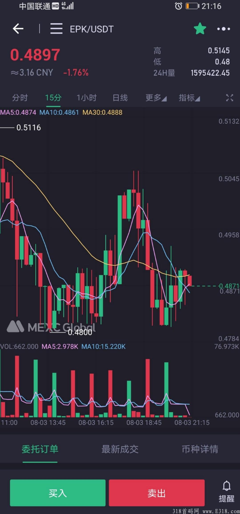

知识大陆，零撸EPK，NFT知识勋章，不要错过！
更多详细请返回首页加入社区哦
24小时启动制
知识大陆app，是全球首款游戏化知识图谱协作平台。
玩法介绍
注册链接:https://www.epikg.com/app/invite?code=jAKtCA&inviter=b94f873d-******-eb46e510437b
邀请码: jAKtCA
登录app怎么玩
1进入app，点击火堆，先进行简单的语音认证，朗读下几个数字录个音，非常的简单，答题都选择（是），答题获得积分
2认证完成，点击洞穴，进行答题任务，每天20题，答完题获得积分，然后去（探险）获得EPK币。
3每天都可以进行答题获得积分，积分还可以拿去升级（火堆）（洞穴）（探险）从而获得更多的积分，获得更多的EPK币。
EPK币现已经上交易所

piK Protocol 铭识协议
铭识协议是全球首个 AI 数据的分布式存储协议，通过整合 IPFS 存储技术、Token 激励机制和 DAO 治理模型，打造出具备可信存储、可信激励、可信治理和可信金融四大核心能力的全球开放自治社区，以极低的管理成本组织全球社区用户共同协作，持续产生可共建共享共益的高质量 AI 数据，开阔 AI 的认知，推动全面智能化时代的到来。
代币名：EPK
合约地址：0xdaf88906ac1de12ba2b1d2f7bfc94e9638ac40c4
生态合作伙伴：
Open Knowledge Foundation（全球最⼤ NGO 开源开放数据组织）；
SingularityNET（全球⾸个去中⼼化 AI 服务⽹络， 全球⾸个机器⼈公⺠ Sofina 缔造者）；
Ocean Protocol（全球最⼤去中⼼化的数据交换协议）；
清华大学（清华信息国家研究中⼼⼤数据部知识团队与 EpiK 合作研发的“健康 链”亮相清华110周年校庆）；
OpenKG（全球最⼤中⽂知识图谱库）；
iMerit（全球⾼质量 AI 数据提供者，被评为全球50家增⻓最快科技公司）；
OpenSLR（全球最⼤的开放中⽂语⾳数据社区）；
DataUnion；Chainlink；CSAGI；ChinaCC.Net等等
EPIK 官网 ：https://www.epik-protocol.io/
EPIK 钱包：https://epik-protocol.io/wallet
EPIK GitHub：https://github.com/EpiK-Protocol
EPIK 微信公众号: EpiK Protocol 铭识EPIK